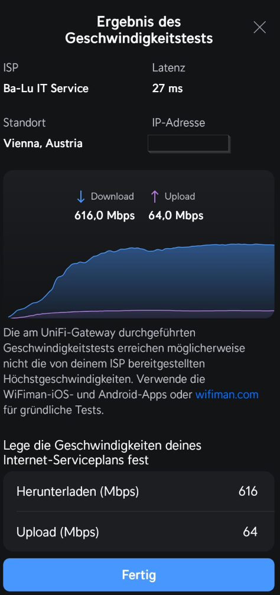

Liebes Magenta Team!
Ich verwende nun seit knapp einem Monat die 5G OutdoorBox - und bin bisher unzufrieden .
Derzeit muss ich mich zwischen "es funktioniert garnicht" oder "es funktioniert mit maximal 15% der verfügbaren Bandbreite" entscheiden.
Kanns das sein?
Erklärung:
Die ODU wird hinter einer Unifi UDM betrieben - die IDU wird hier also nicht benötigt.
In Zeiten von Smarthome spielt dabei der "Bridge-Mode", oder von Magenta perfekt übersetzt "Brückenmodus", eine entscheidende Rolle. Ich für meinen Teil möchte (oder muss) von außen über Internet auf mein Netzwerk zugreifen können. Dazu ist die public IP auf dem WAN Port NOTWENDIG.
Dabei sind mir 2 Probleme aufgefallen:
1.) Ist die Weboberfläche der ODU, nachdem man den Bridge-Mode ausgewählt und neu gestartet hat, über 192.168.0.1 nicht mehr erreichbar - Das Gerät aber sehrwohl Pingbar (Internet "funktioniert") - Das ist ärgerlich - aber damit kann man leben.
2.) Wird die Download/Uploadgeschwindigkeit von anfänglich 600/60 auf ca. 130/30 "gedrosselt" - natürlich ein totaler showstopper!
Bitte kommt mir jetzt nicht "es ist normal, dass beim umschalten von Router auf Bridgemode der Speed verloren geht" - Diese Aussage ist so nicht korrekt. Ich verwende Seit mehreren Jahren 5G Router (zb Huawei CPE Pro 2) wo der Bridgemode perfekt funktioniert (ohne jegliche Leistungseinbußen)!
Und wenns auch "schwierig" sein sollte das Problem zu lösen - von "schwierig" kann oder will ich nicht abbeißen - MACHEN heißt die Devise!
Bitte verzichtet auch auf die Standartphrasen "Die ODU muss mit der IDU betrieben werden, sonst klappts nicht", oder "APN umstellen", oder "auf Werkseinstellungen zurücksetzen".... Liebes Magenta-Team - Es soll auch professionelle User unter euren Privatkunden geben!
Ich bin hier bei weitem nicht der Einzige mit dem Problem - im schlimmsten Fall muss halt der Druck Richtung Magenta erhöht werden damit diese vermurkste Software auf dem Router endlich funktioniert!
Ich hoffe nicht, ich "erwarte" mir eine baldige Lösung
THX
Gerätename af62-fwa.odu
Software Version 02.10.00.20
Leider hast du die neue af62 das ist leider die schlechtere Version
Wusste warum ich nicht Tausche meine af55 mit sdx55 gegen die neue mit sdx62
Leider sind die sehr abgespeckt die x62 eher 2 Rückschritte gegen die alte
X55 Luxus
X65 Luxus
X62 abgespeckt nicht mehr Luxus billig halt
P.s, eines vorweg vergiss den Bridge Modus lese Mal hier ein Bridge Modus und auch ein Mesh geteiltes Mesh hast du immer Verluste
Finger weg von den Bridge Modus und geteiltes Mesh leute aber das kann man ja überall lesen und ist bestätigt zu 100 % ! Würde nie den Bridge Modus einschalten nie im Leben 😉
Also mit der x55 hättest sicher mehr Freude gehabt habe echt viele durch in den letzten 5 Jahren eigentlich fast alle aber bei der af55 bin ich geblieben bis jetzt und noch sicher 1 Jahr wenn Mal was besseres nach kommt
Darum sind auch noch immer die ZTE 801a so bleliebt wegen den sdx55 ist halt Luxus gewesen und noch immer
Bis jetzt kam nix besseres nach ja außer x65 aber da gibt nicht Mal 1x Hand voll
Also mein Sohn, Bruder , und ich würden nie gegen eine neue Tauschen af62 nie und nimmer
Eventuell kannst du sie umtauschen auf eine af55 oder verkaufe die und hole dir eine über willhaben etc
Schau das du sie schnell los bekommst nur Tipp 😉
Schade halt das sie nicht den x65 verbaut haben und wieder sparen müssen mit billigs zeug
Tut mir leid das du schlechte Erfahrungen machen musstest aber war bei mir auch hin und wieder aber gegen die af55 bzw sdx55 kommen eigentlich keine Ran bis jetzt
Mfg
Bearbeitet von Klaximaxi43Wenn du ohne Bridge-Mode auskommst, dann ist das für dich doch in Ordnung. Ich für meinen Teil bin darauf angewiesen, dass die public IP am WAN anliegt.
Gewisse Dinge lassen sich nur so realisieren.
Für Otto-Normal, da geb ich dir recht, spielt es keine Rolle ob Bridge oder Router-Mode. Und da Bridge nicht korrekt funktioniert, natürlich vorzugsweise Router-Mode.
Ich fahre Dual WAN mit einer UDMP auf einem Standort.
Dort hängt diese jeweils hinter einem Modem mit NAT. Kurz zusammengefasst, es funktioniert. Inkl. VPN Zugriff über Wireguard über beide WAN Leitungen.
Die Portweiterleitungen sind dann halt im Modem vor dem Unifi Gerät auch eingetragen. Mit IP Sec sieht es etwas anders aus, damit bin ich aber noch nie warm geworden.
Hy IT-Freak!
Ich fahre auch Dual WAN mit meiner UDMP.
Es funktioniert mit dem Huawei 5G CPE Pro2 auch bei mir (perfekt) - und zwar mit voller Bandbreite 600/60 (im Bridge-Mode)

Es funktioniert auch mit der 5G Outdoor-Box im Routermodus (da hängt aber die interne IP am WAN, das würde dann auch bei dir nicht funktionieren...spätestens da würde man einen dyndns service benötigen, welcher aber auch die (interne) WAN IP published)
Es funktioniert jedoch NICHT mit der 5G Outdoor-Box im Bridge-Mode
- und nichts anderes habe ich hier geschrieben. Dieses Problem, dass der Bridge-Mode mit der 5G Outdoor-Box nicht funktioniert, muss Magenta lösen.
Genau so ist es darum vergesst doch den Bridge Modus mein Setup ist auch so aber halt mit einem AX3000T Router am wan Port
Router Modus alles so belassen am Outdoor router und einfach die idu gegen einen Xiaomi AX3000T Router aus getauscht (auf wan natürlich) , fertig und full Speed sogar bischen mehr immer siehe auch meine Threads Bilder sogar mit ikev2 vpn auf den Boxen , Handy , Tablet
Das mit Bridge Modus ist ein Mythos für was solltest du den brauchen heutzutage das hat nix mit Otto normal User zum tun 😉
Und nochmals es ist Fakt und überall so mit Bridge Modus oder geteiltes Mesh verlierst du halt an Band breite das ändert nix auch wenn du ein anderes Gerät hast das ist Fakt und belegt 😁
Und nochmals leider hast du die mit sdx62 das ist auch ein Problem leider ist halt nicht der beste Chipsatz leider !
Weiß auch nicht warum man da wieder einen x62 verbaut anstatt gleich einen x65 bzw da lasse ich lieber die alte mit sdx55 was auch besser ist ! Ein x62 ist eher 2 du zum x55 leider das ist auch Fakt
Und das mit dem Bridge Modus kannst ja auch da lesen und überall du verlierst also bitte dann nicht wundern ! Und das ist dann leider deine Sache wenn du meinst du brauchst einen Bridge Modus für was bitte !
Das kann Magenta nicht lösen und andere Router oder andere Hersteller auch nicht es ist Fakt du verlierst an Band breite im bridge Modus weil es so ist ! Und auch mit ein geteiltes Mesh ! Bitte dann nicht wundern !
Trotzdem viel Erfolg mit deinem vorhaben
Mfg
Bearbeitet von Klaximaxi43Am 23.9.2024 um 18:26 schrieb CGa:Hy IT-Freak!
Ich fahre auch Dual WAN mit meiner UDMP.
Es funktioniert mit dem Huawei 5G CPE Pro2 auch bei mir (perfekt) - und zwar mit voller Bandbreite 600/60 (im Bridge-Mode)
Es funktioniert auch mit der 5G Outdoor-Box im Routermodus (da hängt aber die interne IP am WAN, das würde dann auch bei dir nicht funktionieren...spätestens da würde man einen dyndns service benötigen, welcher aber auch die (interne) WAN IP published)
Es funktioniert jedoch NICHT mit der 5G Outdoor-Box im Bridge-Mode - und nichts anderes habe ich hier geschrieben. Dieses Problem, dass der Bridge-Mode mit der 5G Outdoor-Box nicht funktioniert, muss Magenta lösen.
Hier für dich nochmals raus gesucht
Viel Erfolg
P.s. Bridge Modus macht man eigentlich nur um den Routerzwang zum umgehen bei Kabel Anbieter
Bild :
Router Modus und Ax3000t auf wan
Aber das hast du ja bei LTE 5g Router nicht ! Viel Erfolg
Bearbeitet von Klaximaxi43Sry Klaximaxi, dass ist leider nicht ganz korrekt...
Der Bridgemode ist dazu da, dass das Modem in einen quasi "reinen Modemzustand" versetzt wird - ohne jegliche Routerfunktion.
Vorteile:
Das mit dem Speed mag man durchaus bei einigen Modems lesen, aber du verlinkst hier Post die um die 5-10 Jahre alt sind. Das ist Schnee von vorgestern.
Es ist genauso oft zu lesen, dass Magenta bereits zugegeben hat Fehler in der Firmware zu haben.
Rein Layer 2 ist nicht ganz möglich im LTE Netz, viele Modems sind intern schon geroutet.
Am 25.9.2024 um 19:27 schrieb CGa:Sry Klaximaxi, dass ist leider nicht ganz korrekt...
Der Bridgemode ist dazu da, dass das Modem in einen quasi "reinen Modemzustand" versetzt wird - ohne jegliche Routerfunktion.
Vorteile:
- Public IP am WAN Port
- kein double NAT
- Modem lässt alles durch, Firewall und Portsettings können (an einer Stelle) im Router hinter dem Modem konfiguriert werden
- Reines Layer 2 Netzwerk
Das mit dem Speed mag man durchaus bei einigen Modems lesen, aber du verlinkst hier Post die um die 5-10 Jahre alt sind. Das ist Schnee von vorgestern.
Es ist genauso oft zu lesen, dass Magenta bereits zugegeben hat Fehler in der Firmware zu haben.
Public bekommst auch ohne Bridge Modus
Kein Double Nat geht auch mit gute Router
Firewall Port settings auch kein Problem
Laser 2 ne 😉
Und wie gesagt zugeben ja aber das haben alle das Problem im Bridge Modus das ist so leider egal welcher und egal welche Marke oder Firmware
Bzw nochmals du hast die neue und da war nie die Rede von einem Software Problem das war die alte Box af55 und das Problem wurde behoben mit Bridge Modus das es da ist aber hilft nix wegen der Geschwindigkeit
Siehe auch andere Posts von mir und andere af55 nicht af62
Mit Bridge Modus hat sich noch nie was geändert auch die letzten 10 Jahre nicht
Kann'st dir ja einen Cudy 5g oder gl.inet 5g zulegen bzw mit openwt dann hast du natürlich mehr Möglichkeiten
Und wie gesagt die hast die af62 nicht die af55 da hat Magenta nie was behauptet das es Fehler gibt da sie die erst seit nicht mal 1 Monat hergeben
Aber Fakt ist die af62 ist 2x Rück Schritt zum af55 leider
Mfg
Bearbeitet von Klaximaxi43P.s. der einzige Outdoor router was von Haus aus im Bridge Modus ist der Askey RTL 6300 aber den habe ich gleich wieder verkauft
Und nochmals bei den Problem mit Bridge Modus war beim alten af55 und weil es aus geblendet war mehr nicht und das wurde behoben ist jetzt auswählbar
{kind=link}
{kind=link}